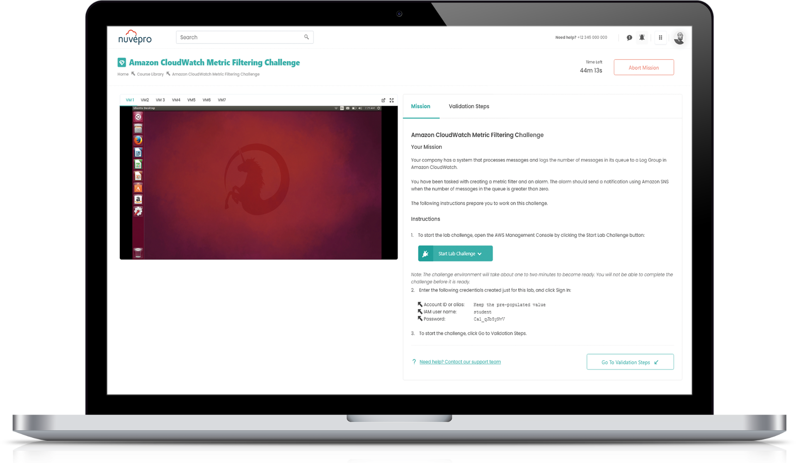
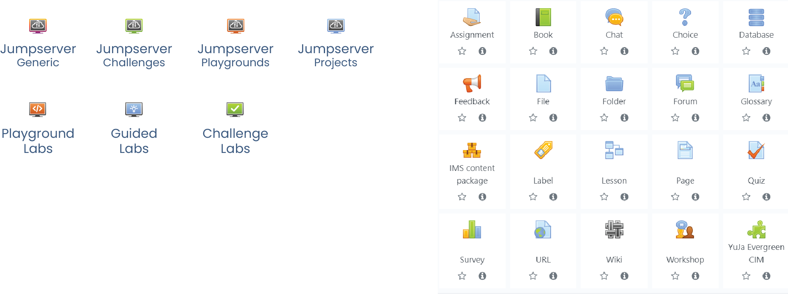
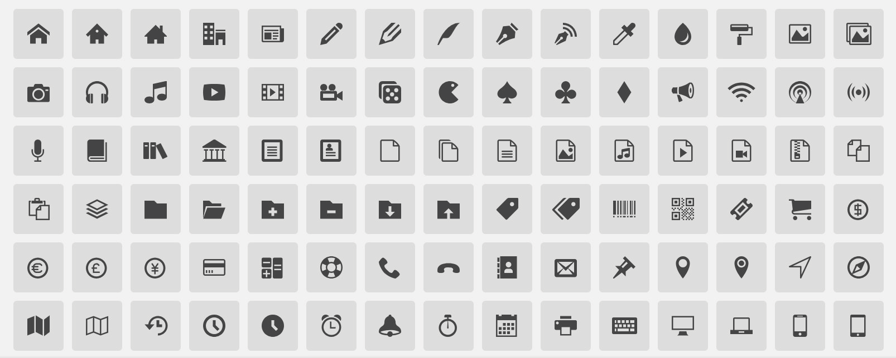

Role: UX designer, UI designer Date: Jan 2021 - September 2022 Team: Adarsh EA, Mohd. Zuheb, Manoj Joshi, Pooja Kannan Tools: Adobe XD, Microsoft Teams, Zoho Sprints, Sharepoint, draw.io
Overview
Nuvepro Technologies sought to enhance Moodle, a popular Learning Management System (LMS), by integrating cloud labs into the platform. The integration aimed to provide a seamless learning experience where users could access and interact with cloud-based environments and virtual machines directly within their courses. This case study details the UX design process, challenges, and solutions for creating an intuitive interface for both cloud labs and resource labs.
Background
Nuvepro Technologies offers cloud labs to clients in three key categories: enterprises, educational institutions, and online learning providers. Their cloud labs provide real-world configurations for testing solutions and are also utilized in hackathons. The challenge was to integrate these labs into Moodle while maintaining a user-friendly experience and adhering to Moodle’s customization limitations.
Project Goals
Seamless Integration
Embed cloud labs and virtual machines into Moodle courses without disrupting the user experience.
Intuitive Interface
Ensure that the layout and functionality are intuitive for users to navigate between course content and labs.
Consistent Design
Develop a design that matches Moodle's existing aesthetics while incorporating custom elements for the new features.
Design Constraints
Limited Customization
Moodle’s customization options were restricted, necessitating the use oftemplates and adherence to existing Moodle design guidelines.
Lab Types
Cloud Labs
AWS, Azure, and GCP environments that cannot be embedded in iframes.
Resource Labs
Virtual machines (Ubuntu Linux, macOS, Windows) that can be embedded in iframes.
Design Process
User Research and Analysis
We took the time to create detailed user personas to truly understand the people using our LMS and sandbox integration. From enterprise employees eager to upskill, to university students bringing classroom concepts to life, to self-paced learners chasing new career opportunities, each persona helped us see their unique motivations, goals, and struggles. These insights gave us a clearer picture of their needs, so we could design solutions that feel natural, supportive, and engaging for everyone.
User Personas
Enterprise Employee (Upskilling)
Profile
Name: Rajesh Sharma
Age: 35
Role: Mid-Level IT Manager
Background: 10 years of experience in IT operations, transitioning to cloud solutions.
Goals: Advance career through certifications like AWS, Azure, and GCP; gain hands-on experience to lead cloud migration projects.
Motivations
Acquire practical skills aligned with industry standards.
Complete certifications to enhance career growth.
Learn new cloud technologies in a secure, real-world simulated environment.
Work on real-time scenarios to tackle workplace challenges confidently.
Pain Points
Traditional LMS Issues:
Static content doesn’t provide practical exposure to complex systems.
Multiple platforms for learning and practicing are cumbersome.
Time Constraints:
Limited availability to juggle between job responsibilities and upskilling.
Assessment Limitations:
Difficulty in receiving actionable feedback and validating learning outcomes in standard LMS setups.
Higher Education Student (University Learner)
Profile
Name: Priya Desai
Age: 21
Role: Computer Science Undergraduate
Background: Final-year student specializing in cloud computing and DevOps.
Goals: Understand theoretical concepts practically, excel in coursework, and secure internships or entry-level roles in cloud engineering.
Motivations
Apply theoretical knowledge to real-world problems through a guided sandbox environment.
Complete assessments and projects within a single, streamlined system.
Build confidence in debugging and solving practical challenges.
Learn tools and techniques relevant to the tech industry to prepare for job interviews.
Pain Points
Traditional LMS Issues:
Lack of integrated practice environments; forced to find external tools for labs.
No real-time feedback on assignments or projects.
Learning Curve:
Difficulty in managing multiple resources for learning and practical application.
Access Limitations:
Limited sandbox access for experimentation, leading to a disconnect between learning and practice.
EdTech Course Taker (Self-Paced Learning)
Profile
Name: John Carter
Age: 29
Role: Aspiring DevOps Engineer
Background: Non-technical professional transitioning into tech, enrolled in online certification courses via an edtech platform.
Goals: Gain hands-on cloud experience, complete industry-relevant projects, and showcase skills to potential employers.
Motivations
Access guided lab exercises to bridge the gap between theory and application.
Learn at a flexible pace while balancing a full-time job.
Practice scenarios aligned with real-world use cases to boost confidence.
Build a portfolio of projects to demonstrate capabilities to recruiters.
Pain Points
Traditional LMS Issues:
Separation between content delivery and practice environments creates confusion.
Limited ability to troubleshoot errors without guided feedback.
Lack of Personalization:
Courses are often too generic, lacking alignment with individual career goals.
Technical Barriers:
Challenges in setting up local environments for practice lead to a lack of motivation.
Stakeholder Interviews
Next, we conducted stakeholder interviews with the majority of the Nuvepro team. We spoke with individuals from Sales, Marketing, Finance/Infrastructure, Support, and Engineering/Development. These were the insights that we gleaned from those interviews.
Business Goals
Increase user adoption by creating an intuitive LMS and sandbox experience tailored to diverse audiences like enterprise employees, students, and edtech learners.
Boost user engagement by enabling seamless integration of practical labs and assessments within the LMS platform.
Strengthen the company's market position by delivering an innovative solution that bridges theoretical learning and hands-on practice.
User Needs
Access a single, easy-to-navigate platform for learning, practicing, and submitting assessments.
Receive actionable feedback and support while working on real-world lab environments.
Save time and effort with seamless transitions between course content and interactive sandbox environments.
Technical Requirements
Integrate sandbox environments that support a variety of configurations (e.g., AWS, Azure, Linux VMs) directly within the LMS.
Ensure compatibility with existing LMS platforms like Moodle, maintaining consistent design and functionality.
Implement a secure, scalable backend to handle multiple users simultaneously accessing labs and submitting assessments.
User Flows
We created user flow based on common tasks that the target user would do on the site.
With these user flows in mind, we started visualizing past the MVP through wireframing as much as we could.
Medium Fidelity Wireframes
Design Strategy & Implementation
Layout Decisions
Based on user feedback, determined that placing content on the right side of the screen made it easier for users to focus and work efficiently.

Icon Design
Developed custom icons and defined typography, colors, and spacing to create a cohesive look that complements Moodle’s default design.

Implemented IcoMoon Ultimate icons within the Moodle interface, ensuring that they complemented Moodle’s default icons and enhanced usability.

Typography & Colors
Defined a consistent typography and color scheme that aligned with Moodle’s design principles while introducing custom elements for clarity.
Testing and Iteration
We conducted usability tests with end-users to gather valuable feedback on the new design. This process allowed us to identify pain points, address usability concerns, and make iterative improvements to enhance the overall user experience.
In addition, we organized workshops to directly introduce feature enhancements. These sessions enabled users to actively participate, explore the platform’s functionalities, and provide actionable feedback, ensuring further refinement and alignment with their needs.
Feedback Integration
We refined the design based on user feedback to address usability issues and improve overall satisfaction. One of the key enhancements was the introduction of detailed assessment summaries, which provided users with clear insights into their performance. This feature prioritized feedback by highlighting strengths and areas for improvement, ensuring that learners had a clear roadmap for their next steps. Additionally, these summaries were designed to be visually intuitive, making it easier for users to track their progress at a glance.
To improve the assessment process, we introduced an alert screen that appears as a warning before submitting an assessment. This screen informs users that once they submit their assessment, they cannot go back or make further changes. By integrating this step, we ensured users have a final opportunity to review their work and confirm their submission, minimizing errors and potential frustrations.


{kind=link}
{kind=link}